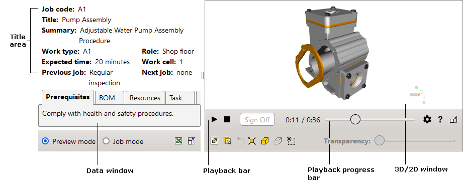

The text that contains a link to a 2D image is underlined with a dotted line (e.g.
The interactive document can be used in two different modes:
The user interface of the interactive document consists of two workspaces: Data window and 3D/2D window. Each workspace has its own control elements.
For help, click the Help button at the lower right corner of the interactive document.
|  |
The Data window contains the Title area and the following tabs: Prerequisites, BOM, Resources, Instructions, and Document.
The Title area displays general information about the work instructions. For example, job code, work type, expected time.
The Prerequisites tab describes the conditions that must be fulfilled before starting the technical procedure. The tab is active when the interactive document is first opened.
The BOM (Bill of Material) tab displays an indented parts list. Each BOM record provides the following information about a part: part number, description, quantity, and alternative part number.
The user click on the BOM record fits and highlights the corresponding items in the 3D window.
Placing the pointer over a BOM record highlights the record and corresponding items in the 3D window.
The user click on the plus sign expands the hierarchy.
The Resources tab describes resources required for performing the technical procedure.
The Instructions tab consists of the following sections: Current Task, Required Parts, Required Resources. The Current Task section displays a text for the current task.
The text can contain hyperlinks to 3D items and 2D images.
The text that contains a link to a 3D item is underlined with a dashed line.
The user click on the underlined text selects and fits the corresponding item in the 3D window.
The text that contains a link to a 2D image is underlined with a dotted line
(e.g.  ). The user click on the underlined text opens the
corresponding image in the 2D window.
). The user click on the underlined text opens the
corresponding image in the 2D window.
The Required Parts section displays the BOM data only for the parts that contain links to the corresponding 3D items.
The Required Resources section displays the resources required for the current task.
The Document tab displays the full text of the work instructions.
In the Job mode, the user can click the Sign off button to go to the next task of the instruction. The previous task displays the time and date when the Sign off button was clicked for that task (e.g. Sign off: Wednesday, July 21, 2010 12:47:10 PM). Displaying time and date is possible only within the current session as this data is not stored anywhere.
The Inspection required message box can appear during the procedure playback. The corresponding task displays the time and data when the Close button is clicked in the Inspection required message box (e.g. Inspected: Wednesday, July 21, 2010 12:48:57 PM). Displaying time and date is possible only within the current session.
In the Preview mode, clicking the required task of the procedure highlights the task in the Document tab and enables the procedure playback. In the Job mode, only the current task is available for the playback.
The Document text can contain hyperlinks to 3D items and 2D images (see the Instructions tab).
The 3D window provides a 3D representation of the procedure described in the Document tab. In the 3D window the user can play the procedure using the Playback bar and navigate using the mouse buttons. The locator (for example, axis tripod) at the top right corner of the 3D window allows you to determine the spatial position of the unit or part.
Buttons for controlling the procedure playback in the 3D window.
| Command | Purpose |
|---|---|
| Play | Starts the playback of the procedure if it is stopped or paused. |
| Pause | Stops the playback at the current step. |
| Stop | Stops and rewinds the current step to the beginning. |
| Sign off |
Available in the Job mode. Activates the next task: the task is highlighted in the Document tab and the corresponding moment of the procedure is playing back in the 3D window. The previous task in the Document tab displays the time and date when the Sign off button was clicked for that task. |
|
Settings |
Shows or hides the Settings list. Speed. Sets the playback speed. Freeze viewpoint. If it is selected, locks the camera to the current view, thus preventing the camera's movement during the procedure playback. Disable alert messages. If it is selected, disables the alerting messages of the procedure during the playback. PMI. If it is selected, the PMI data will be displayed. Product Manufacturing Information (PMI) represents non-geometric attributes in 3D computer-aided design necessary for manufacturing product components or subsystems. Scene lighting. Defines the number of light sources and their location to illuminate the model in the 3D window. The relative positions of the light sources are displayed to the right of the list. All light sources move with the viewer. Show navigation cube. Shows or hides the Navigation Cube in the 3D window. The Navigation Cube has three different types of hotspot areas: Edge, Corner, and Face. When you position the pointer over the edge, corner, or face of the Navigation Cube, the corresponding area is highlighted. With these areas you can switch between standard views and perform rotations. Show surface edges. If it is selected, enables the display of surface boundaries in the 3D window. Anti-aliasing. Activates a technique for minimizing the distortion artifacts in the 3D window. Ambient occlusion. Activates ambient occlusion shading and rendering technique in the 3D window. Selection mode. Specifies objects representation for selection in the 3D window. Highlight with color – the selection is highlighted. X-ray selected objects – objects appear gray and translucent, except for the selection. Translucent shell – the outer shell of the entire model appears translucent, non-selected internal objects are hidden. Outline hovered objects. The selection is outlined. |
Shows the playback progress. Clicking the bar allows choosing the desired moment of the procedure.
Buttons for fitting, showing, hiding and making transparent objects selected in the 3D window.
| User interface | Button | Purpose |
|---|---|---|
| Show selected objects in separate window |

|
If enabled, displays the selection in the secondary 3D window. |
| Ignore transparency |

|
If enabled, allows you to click through the transparent items in the 3D window, as the transparent items become insensitive to the user click. |
| Restore all |

|
Shows all hidden and semitransparent objects. |
| Fit |

|
Fits the bounding box of the selected items to the 3D window. |
| Show |

|
Makes visible the selected items previously hidden in the 3D window. |
| Hide |

|
Hides the selected items in the 3D window. |
| Select none |

|
Deselects all items. |
| Transparency | Allows you to set the transparency value for the selected items. The Transparency command is available if one or more items are selected in the 3D window. |
The selected objects appear in the secondary 3D window.
| User interface | Button | Purpose |
|---|---|---|
| Set center | Allows you to specify the rotation center for the 3D model. | |
| Show rotation center |

|
Allows you to hide or show the rotation center. |
| Fit all |

|
Makes the entire 3D model fully visible in the 3D window. |
| Align horizon |

|
Positions the camera's horizontal (but not longitudinal) axis parallel to the horizontal plane in the coordinate system. |
| Measure |

|
Opens the tool to measure a distance.
In the 3D window, simply click once on one point, then click again on the second point.
The distance between the two red dots should then be displayed.
To get the distance between points projected onto the vertical or horizontal plane, select the projection plane name from the list.
To change the unit of length, select Units.
To set the length of leader lines, drag the H slider.
Select Keep visible to make the dimension line visible after you close the measurement tool.
To set new points, click Clear or press the Esc key, and then specify points in the 3D window.
WARNING Do not use measurement results directly in the workflow as the 3D illustration may differ from the actual product. To obtain the dimensions necessary for manufacturing or servicing, refer to the relevant technical documentation. |
| Section plane |

|
Displays the model as if it were cut by a plane. Use controls to set (Left, Top, Front) and rotate (X and Y) the section plane. To move the section plane, drag the D slider. Use Flip to mirror the section. Select Precise mode to improve the accuracy of the sliders. Select Keep visible to make the section visible after you close the tool. To move the section plane to the center of the selection, click Reset. |
| Front |

|
Shows the model from the front. |
| Back |

|
Shows the model from the back. |
| Left |

|
Shows the model from the left side. |
| Right |

|
Shows the model from the right side. |
| Top |

|
Shows the model from the top. |
| Bottom |

|
Shows the model from the bottom. |
| Isometric |

|
Shows the model in an isometric view. |
Right-click anywhere in the 3D window to access the context-sensitive menu.
| Command | Purpose |
|---|---|
| Reset | Resets the step view. |
| Fit all | Makes the items fully visible in the 3D window. |
| About | Shows the versions of interactive document, 3D viewer and 2D viewer. |
The 2D window displays vector and raster images associated with the procedure described in the Data window.
The 2D window replaces the 3D window when the user clicks a 2D image hyperlink in the Data window (Instructions tab or Document tab).
Right-click in the 2D window to access the available context-sensitive commands. The list of commands depend on which 2D viewer is using in the 2D window.| Operation | User action |
|---|---|
| Pan | Move the mouse while holding down its left button. |
| Zoom | Rotate the mouse wheel forward or backward. |
| Help |

|
Provides the help system for the user interface. |
| 3D |

|
Opens the 3D window. |